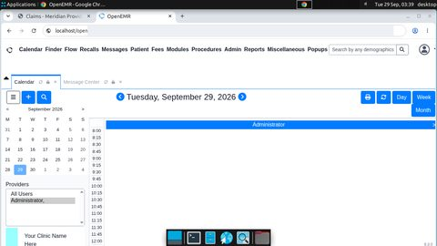

Forkloop
Turn your agent's failures into verified training data.
When a computer-use agent fails a workflow in real software, Forkloop restores an earlier checkpoint of the world and the agent's memory, lets a teacher try again on independent copies, keeps only the paths the application's database confirms, and exports them with full lineage. Then it tests the retrained agent alone, on tasks it has never seen.
A stalled attempt, finished from step 8.
An untrained open-weights student (Qwen3.8-27B) had to find an authorization number in OpenEMR and file a denial appeal in a payer portal. It logged in to OpenEMR, then never left the calendar screen: the recorded evidence marks a stall from step 9 until its 90-step budget ran out. Forkloop chose the checkpoint where the stall began, restored two copies of that Solari desktop from a VM snapshot (memory and disk), and let a teacher continue each one.


- Restore
- 79 s from a VM snapshot, twice
- Fidelity
- every checksummed table identical; screen distance 0
- Verified
- 2 of 2 branches, by SQL on the portal and OpenEMR databases
- Exported
- the verified steps, each with the exact input the teacher saw
One of six student failures in that run; four were repaired. All patient and claims data is synthetic. Open the evidence bundle →
The loop
Record
Your agent attempts real workflows. Checkpoints bind the world (VM snapshot or deterministic replay) to the agent's explicit memory and history.
Find restart points
From evidence only: the first near-miss of a required value, the first damaged checkpoint, the start of a loop, or step 0.
Repair
A teacher continues from each restored checkpoint on k independent copies. It sees what the agent saw, and is never told why the attempt failed.
Verify
SQL checks on the applications' databases: right record, right value, no duplicate, no collateral edit. No model judges.
Export
Immutable datasets with sha256 lineage to every source trajectory, preference pairs, and audits of what each input contained.
Evaluate alone
The retrained agent runs held-out tasks with no teacher and no search. Unscored infrastructure failures are reported, never counted as passes or failures.
Does it make the agent better?
Try it without an account
The offline demo runs every stage of the loop on a toy world with scripted agents (a labelled simulation) and writes the same evidence bundle as a real run.
git clone https://github.com/rynitepsd-tech/forkloop.git
cd forkloop/projects/forkloop
python3.11 -m venv .venv && . .venv/bin/activate
pip install -e '.[world]'
forkloop demo-loop --out runs/demo-loopFor real runs: the bundled claims-operations world (OpenEMR 8.3 and a synthetic payer portal) runs in Docker, dozens of copies per machine, or on Solari desktops with VM snapshots. Bring your agent through any OpenAI-compatible endpoint or a small Python class, and your own application through world.yaml and a verifier. A second world, Kanboard, was built only through that public interface; 5 of its 6 recorded failures were repaired.
What is and isn't new
VM snapshots, GUI agent benchmarks, deterministic verification, agent debugging and corrective training all exist. Forkloop's contribution is joining them into one loop that keeps the evidence: every checkpoint, branch, verdict, charge and dataset is recorded, failed and unscored work stays visible, and the learning claim is tested on held-out tasks under a registered protocol.